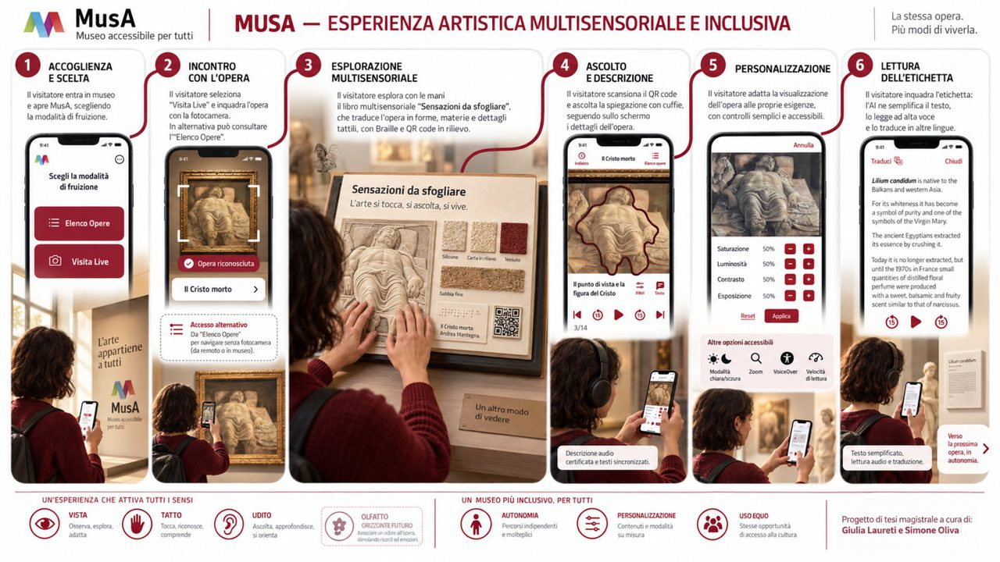
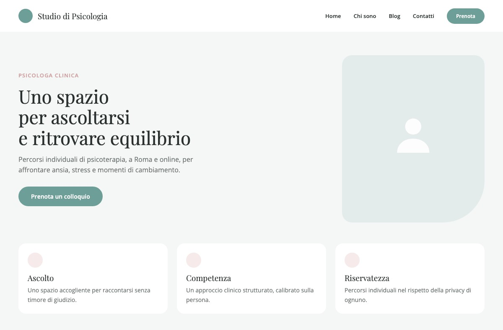
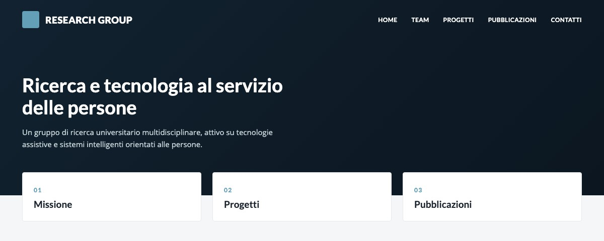
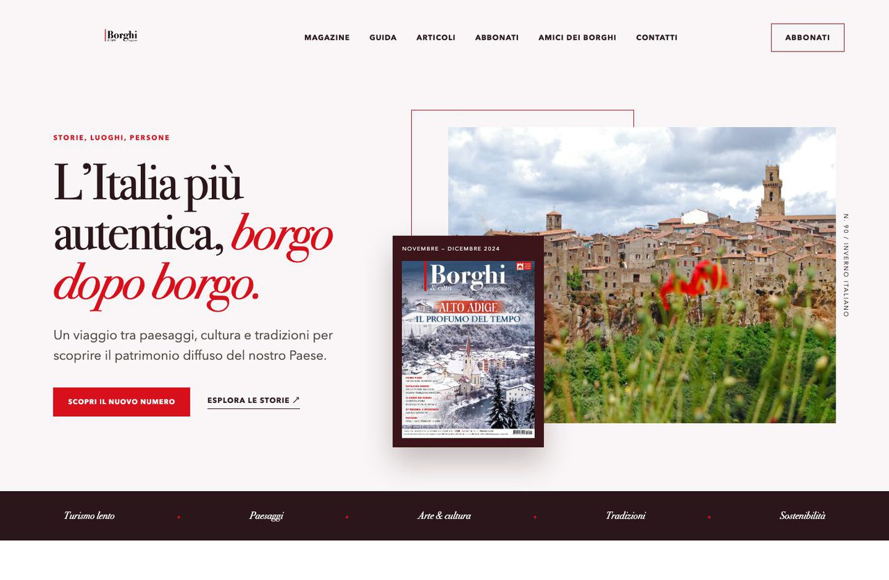
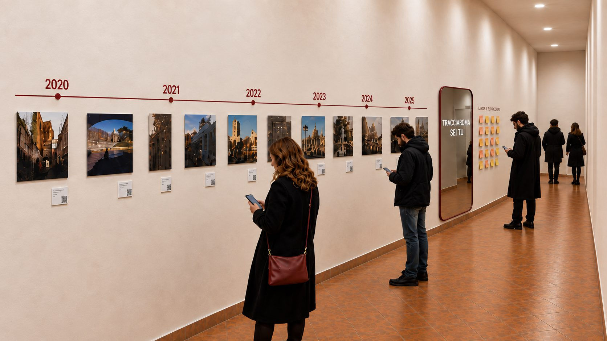
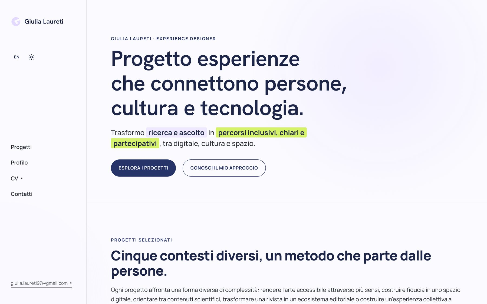

Designing experiences
that connect people,
culture and technology.
I turn research and listening into inclusive, clear and participatory paths, across digital, culture and space.
Six different contexts, one method that starts from people.
Each project tackles a different kind of complexity: making art accessible through more senses, building trust in a digital space, guiding people through scientific content, turning a magazine into an editorial ecosystem, building a collective experience around a photo exhibition, or designing your own portfolio. In every case, the work connects research, structure and delivery.

Designing an Art Experience Beyond Sight
Research, inclusive design and prototyping of a physical-digital experience that pairs sight with touch and hearing.
Explore the project →
Turning Listening and Trust into a Digital Experience
Brand identity, content, UX/UI and WordPress development for a welcoming professional presence she can manage on her own.
Explore the project →
Giving Structure to Complex Scientific Content
Information architecture, digital identity and development of an institutional website for researchers, students and partners.
Explore the project →
From a Magazine to a Digital Ecosystem
UX/UI and development, within a team, of a platform that unites a magazine, blog, subscriptions, e-commerce and community.
Explore the project →
Roma in Prospettiva
A photo exhibition with both physical and digital fruition, designed as a journey through TracciaRoma's history and open to public participation.
Explore the project →
My Personal Website
Information architecture, design system, development, SEO and privacy for the portfolio that tells the story of my work.
Explore the project →From understanding to delivery.
Understand
I listen to the people involved, observe the context, and focus on real needs, constraints and goals before imagining a possible answer.
Give it shape
I translate what emerges into architectures, content, interfaces and experiences, staying with the work through to delivery.
Verify
I put decisions to the test, gather evidence and use what emerges to improve the project. When data is partial, I say so.
The same care, in every context.
I work as an Experience Designer across UX research, digital design, accessibility and cultural experiences to build understandable, inclusive paths. I've been designing websites and digital products as a freelancer since 2021; I bring the same attention to people and context to university teaching and to designing participatory cultural initiatives.
Experience & UX
Content & systems
Culture & participation
Teaching & facilitation

ASIERI
Logo, visual identity and WordPress website for an association of Spanish researchers in Italy. I designed the structure and pages, set up the content management system, and handled maintenance after launch.
Have a complex experience to give shape to?
If you'd like to tell me about a project, discuss a collaboration, or learn more about my background, get in touch.